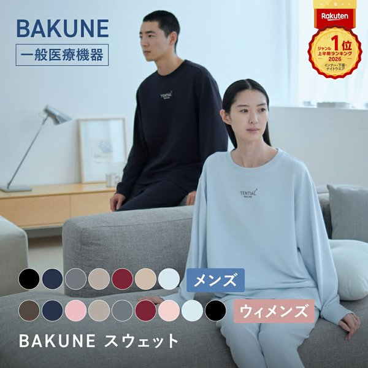
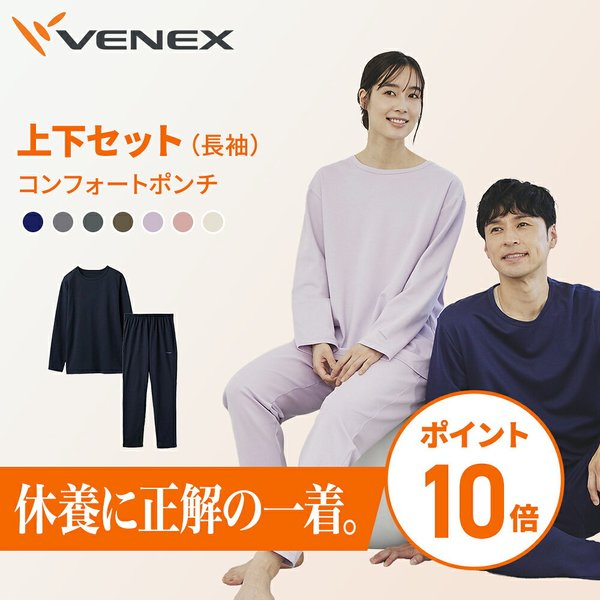
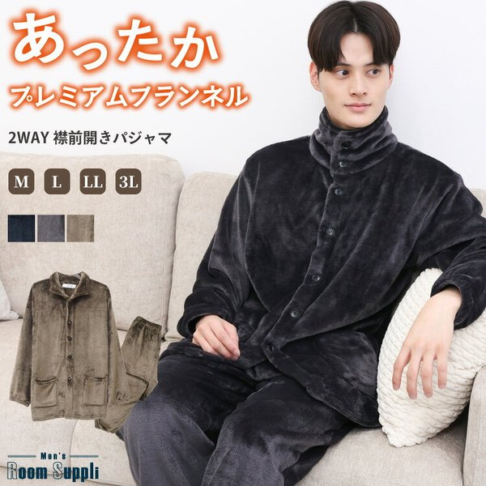
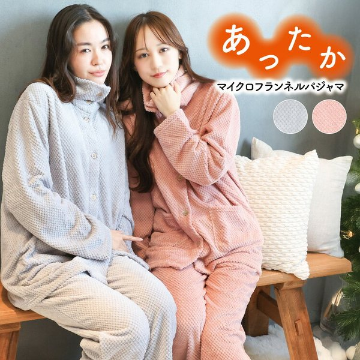
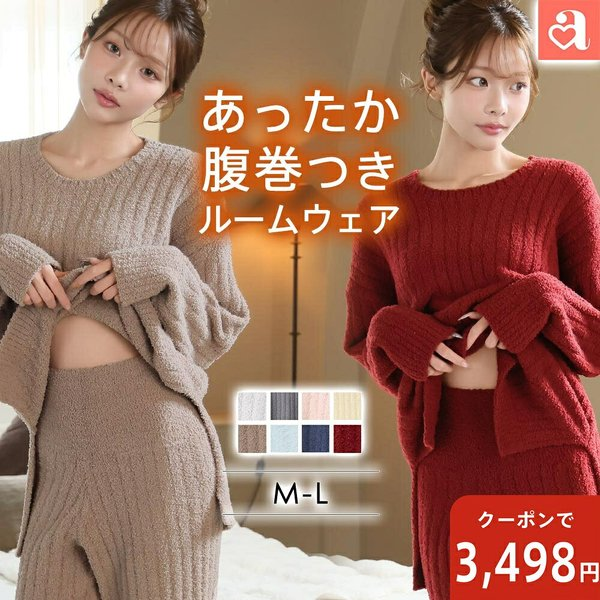
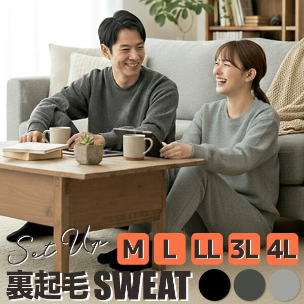
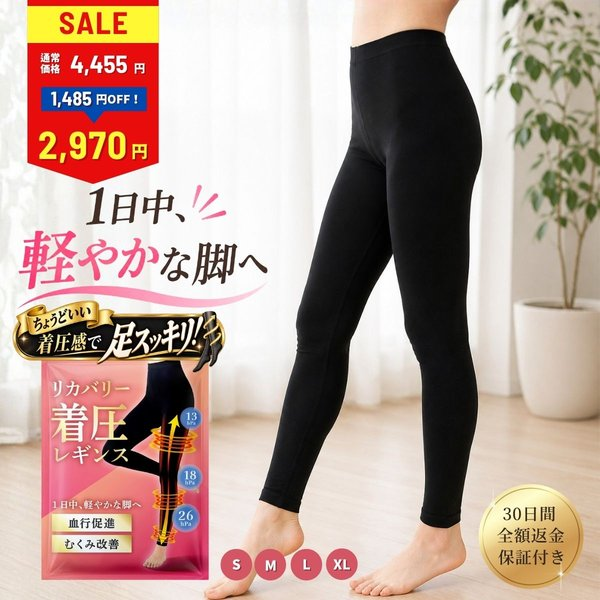
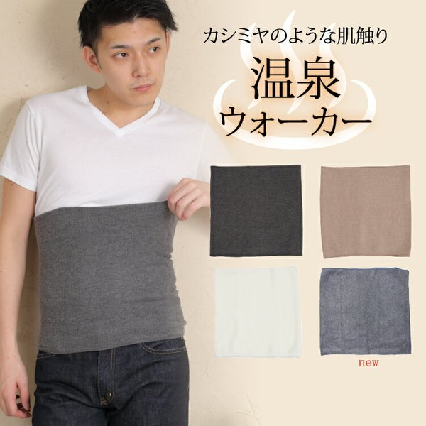
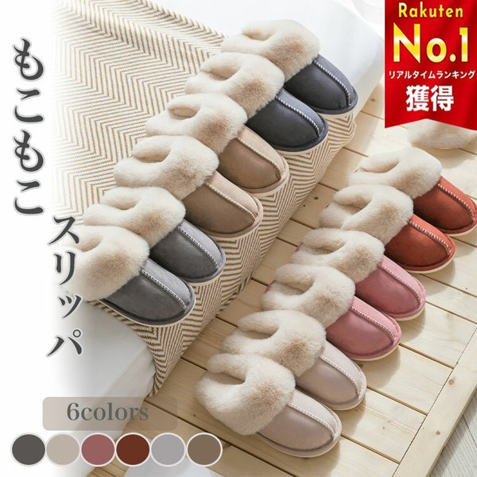

【2026年最新】冬の疲れを翌朝に残さない｜リカバリーウェア＆あったかルームウェア10選
冬の疲れは、寝ている間に抜けきらないことがあります。寒さで眠りが浅くなると朝の体のだるさが残り、その日一日の調子まで落ちてしまう。だから冬の部屋着と寝間着は、見た目より「暖かさと締め付けのなさ」で選ぶ価値があります。
選び方は3つ。素材の暖かさ（起毛・フランネル）、締め付けの少なさ、そして洗濯できるかどうか。リカバリーウェアは血行を促す一般医療機器として作られているものもあり、休む時間の質を変えたい人に向いています。
本記事では、楽天市場で人気・高評価のリカバリーウェア＆あったかルームウェア10選を、実売価格とレビュー評価つきで写真付き紹介します。
- おすすめ10選 スペック・特徴比較表
- BEST 1｜BAKUNE Dry Men's リカバリーウェア上下（半袖）
- BEST 2｜BAKUNE スウェット パジャマ上下（長袖）
- BEST 3｜コンフォートポンチ セットアップ（上下）
- BEST 4｜プレミアムフランネル メンズパジャマ（襟付き前開き）
- BEST 5｜マイクロフランネル レディースパジャマ（着る毛布タイプ）
- BEST 6｜腹巻付きルームウェア 上下セット（レディース）
- BEST 7｜裏起毛スウェット 上下セットアップ（男女兼用）
- BEST 8｜リカバリー着圧レギンス（レディース）
- BEST 9｜メンズ腹巻（日本製・両起毛・吸湿発熱）
- BEST 10｜もこもこルームシューズ（洗える・滑り止め付き）
- 【読者負担0円】買わなくても得する無料サービス
- まとめ：冬のルームウェア10選の選び方
| 順位 | 商品名 | ブランド | 最大の特徴・おすすめ理由 | 総合評価 |
|---|---|---|---|---|
| BEST 1 | BAKUNE Dry Men's リカバリーウェア上下（半袖） | TENTIAL（テンシャル） | 一般医療機器として設計されたリカバリーウェア | 4.62 |
| BEST 2 | BAKUNE スウェット パジャマ上下（長袖） | TENTIAL（テンシャル） | 長袖スウェットで冬向き | 4.56 |
| BEST 3 | コンフォートポンチ セットアップ（上下） | VENEX（ベネクス） | 締め付けの少ないゆったり設計 | 4.61 |
| BEST 4 | プレミアムフランネル メンズパジャマ（襟付き前開き） | ルームサプリ（ニシキ） | 厚手フランネルで暖かい | 4.55 |
| BEST 5 | マイクロフランネル レディースパジャマ（着る毛布タイプ） | ニシキ | 起毛素材で暖かい | 4.47 |
| BEST 6 | 腹巻付きルームウェア 上下セット（レディース） | リブモールニット | 腹巻き付きでお腹から温まる | 4.61 |
| BEST 7 | 裏起毛スウェット 上下セットアップ（男女兼用） | RCP | 裏起毛で暖かい | 4.41 |
| BEST 8 | リカバリー着圧レギンス（レディース） | リカバリー着圧 | 就寝時にも使える着圧設計 | 5.00 |
| BEST 9 | メンズ腹巻（日本製・両起毛・吸湿発熱） | ルネスα | 日本製で肌触りがよい | 4.67 |
| BEST 10 | もこもこルームシューズ（洗える・滑り止め付き） | ルームシューズ 専門店 | 1,000円以下で買える | 4.32 |
BAKUNE Dry Men's リカバリーウェア上下（半袖）

TENTIALのリカバリーウェア「BAKUNE Dry」のメンズ上下セット。独自素材で血行を促進する一般医療機器で、休むときのリカバリーを狙って作られています。半袖タイプなので暖房の効いた室内でも暑くなりにくく、パジャマにも部屋着にも使えます。楽天市場での実売価格は約11,440円（2026年11月時点）。
- 一般医療機器として設計されたリカバリーウェア
- 半袖で暖房の効いた室内でも快適
- レビュー2,700件超の定番
- 1万円を超える価格
BAKUNE スウェット パジャマ上下（長袖）

BAKUNEのスウェット素材の上下セット。長袖で冬の部屋着として着られ、寝るときにも着たまま休めます。メンズ・レディースどちらでも着られるデザインで、家族で揃えやすいのも選びやすいところです。楽天市場での実売価格は約13,420円（2026年11月時点）。
- 長袖スウェットで冬向き
- 寝るときも着たまま休める
- 男女どちらでも着られる
- 厚手なので洗濯後の乾燥に時間がかかる
コンフォートポンチ セットアップ（上下）

休養時のリカバリーを目的に開発されたVENEXのコンフォートポンチセットアップ。ゆったりしたシルエットで締め付けが少なく、長時間座って過ごす日にも負担になりにくい着心地です。在宅時間が長い人や、休日の部屋着を整えたい人に向いています。楽天市場での実売価格は約22,000円（2026年11月時点）。
- 締め付けの少ないゆったり設計
- 上下セットアップで外出着にも見える
- レビュー2,100件超
- 2万円台と価格は高め
プレミアムフランネル メンズパジャマ（襟付き前開き）

襟付きの前開きシャツ型で、厚手のプレミアムフランネルを使ったメンズパジャマ上下。もこもことした起毛で、冬の夜に冷えを感じやすい人に向いています。M〜3Lまでサイズが展開されているので、体型に合わせて選べます。楽天市場での実売価格は約3,380円（2026年11月時点）。
- 厚手フランネルで暖かい
- 襟付き前開きで着脱しやすい
- M〜3Lのサイズ展開
- 厚手なので部屋が暑いと感じることも
マイクロフランネル レディースパジャマ（着る毛布タイプ）

マイクロフランネルの起毛で、着る毛布のように暖かいレディースパジャマ。前開きの立ち襟で首元まで覆え、ゆったりしたシルエットなので体型を拾いにくいのが特長です。厚着を重ねずに暖かく眠りたい人に向いています。楽天市場での実売価格は約2,780円（2026年11月時点）。
- 起毛素材で暖かい
- 立ち襟で首元まで覆える
- ゆったりシルエットで体型カバー
- 毛足が長いので洗濯はネットを使う
腹巻付きルームウェア 上下セット（レディース）

リブ編みのモールニットで仕立てた上下セットのルームウェア。ウエストには腹巻きが付き、冷えやすいお腹まわりを温められます。もこもこしすぎない見た目なので、来客時にもそのまま着ていられます。楽天市場での実売価格は約5,830円（2026年11月時点）。
- 腹巻き付きでお腹から温まる
- 部屋着らしく見えないデザイン
- レビュー2,400件超
- 毛玉ができやすいので洗濯は裏返す
裏起毛スウェット 上下セットアップ（男女兼用）

裏起毛のスウェット上下で、2,000円を切る価格のセットアップ。男女兼用でM〜4Lまでサイズが展開され、部屋着としても寝間着としても使えます。暖かい部屋着を枚数揃えたいときに使いやすい価格です。楽天市場での実売価格は約1,790円（2026年11月時点）。
- 裏起毛で暖かい
- M〜4Lのサイズ展開
- 2,000円を切る価格
- 生地は薄手なので真冬の外着には向かない
リカバリー着圧レギンス（レディース）

就寝時やデスクワーク中に着ける着圧レギンス。脚のむくみが気になるときに、やさしい着圧でケアできます。ムレにくい素材で、30日間の全額返金保証が付いているので初めてでも試しやすい商品です。楽天市場での実売価格は約2,970円（2026年11月時点）。
- 就寝時にも使える着圧設計
- ムレにくい素材
- 30日間の全額返金保証
- 着圧の強さは個人差がある
メンズ腹巻（日本製・両起毛・吸湿発熱）

日本製の両起毛腹巻で、吸湿発熱素材のルネスαを使っています。薄手なのでシャツの下に着ても目立ちにくく、冷え対策を下着で済ませたい人に向いています。洗濯して繰り返し使えるのも日常使いの強みです。楽天市場での実売価格は約1,430円（2026年11月時点）。
- 日本製で肌触りがよい
- 薄手でシャツの下でも目立たない
- 1,400円台で試しやすい
- 夏場は暑く感じる
もこもこルームシューズ（洗える・滑り止め付き）

もこもこの起毛素材のルームシューズ。滑り止め付きで洗濯もできるので、清潔に保てます。足元からの冷えは室温を上げても解消しにくいので、1,000円以下で試せる防寒の第一歩として使いやすい商品です。楽天市場での実売価格は約999円（2026年11月時点）。
- 1,000円以下で買える
- 洗濯できて清潔に保てる
- 滑り止め付きで滑りにくい
- サイズはやや小さめの作り
この記事の商品を買う前に、まずは無料で得する選択肢をチェック。どれも登録・利用は0円で、無料期間中に解約すれば料金はかかりません。読みたい雑誌がある人、ポイントを貯めたい人、アンケートなら気軽という人、それぞれに合うものを選べます。
初回31日無料・無料期間中に解約すれば0円 → 楽天ポイントモール｜登録無料で毎日ポイ活
買い物なしでもポイントが貯まる無料サービス → 楽天インサイト｜アンケートに答えてポイント
登録無料・すきま時間のアンケートで貯まる → 楽天カード｜年会費永年無料
新規発行・年会費ずっと0円 →
4つのサービスの違いと使い分けは「出費0円で得する！買わずにポイントが貯まる無料サービス厳選4選」でまとめています。
💡 まとめ：冬のルームウェア10選の選び方
冬の快適さは、高いリカバリーウェアより先に、足元とお腹の冷えを断つことから始まります。まず腹巻とルームシューズ、次にパジャマやルームウェアの素材を替え、それでも朝の疲れが残るならリカバリーウェアを試す。この順番なら、出費を抑えながら効果を確かめられます。
楽天市場では「5と0のつく日」や「お買い物マラソン」などのキャンペーンに合わせて購入すると、ポイント還元が最大化してお得に手に入ります。ぜひチェックしてみてくださいね。